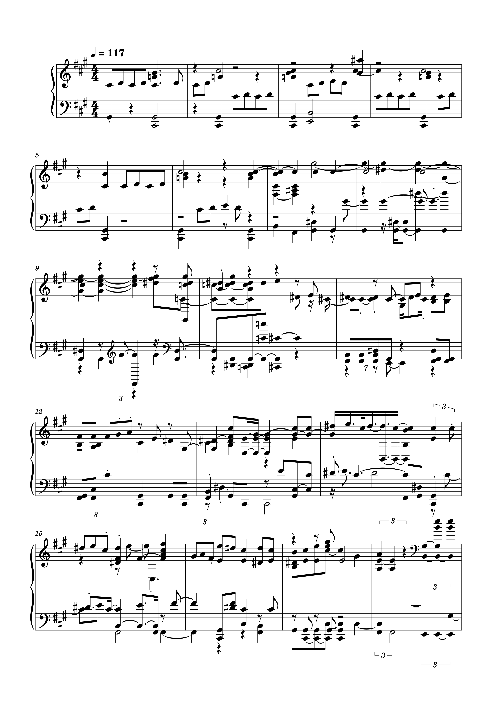
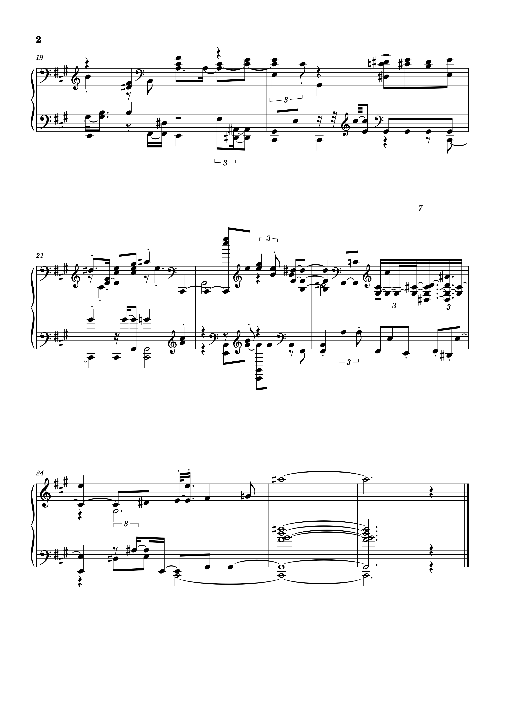

For this task, I extracted the Chroma features in SonicVisualizer for each track and generated a similarity matrix.
Chroma Features
Graph 7 = They Crawl
Graph 8 = Time
Graph 8 = Now we are free
Matrix
Difference between tracks
12 note similarity
Mean Chroma Features
They Crawl
Time
Now We Are Free
Task 2: Transcription
For this task I had to open my piece from week 2 in Musescore, export it as a WAV and image file, open the WAV in SonicVisualizer, and then export a Polyphonic Transcription.
Original Piece from Week 2
WAV file in SonicVisualizer
Result


Reflection
When I opened the transcribed piece in MuseScore, the first thing I noticed was that the notes looked very different and more complicated. Not only were notes missing, but may notes were changed and added. The first bar for example began with extra sharps instead of a b flat followed by a 4/4 time signature instead of the 3/4 of the original piece. The following notes were all wrong with quarter notes turned into eighth notes and vice versa. The mf dynamics was also missing from this bar, and the transcription added the tempo 117, which was not present in the original score. The title of the piece and composer/arranger was also missing from the transcription. When comparing the mp3 files, I found that the transcription was an extra 0:03 longer than the original, which may have been a result of the incorrect time signature. Overall, the accuracy of this type of automated transcription resulted in a lot of incorrect and missing information. However, the audio still generally sounded similar to the original.